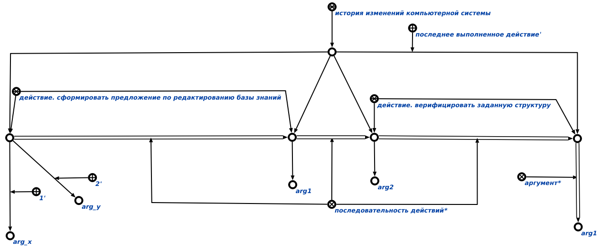

Команда пользовательского интерфейса вывода изменений заданной sc-структуры предназначена для вывода изменений заданной структуры с позиции выполненных действий. Единственным аргументом команды является раздел базы знаний, содержащий спецификации выполненных пользователем действий. Результатом выполнения команды является вывод изменений заданной структуры. Результат выполнения команды показан ниже:
